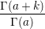

| Up | Next | Prev | PrevTail | Tail |
The Pochhammer notation (a)k (also called Pochhammer’s symbol) is supported by the binary operator POCHHAMMER(A,K). For a non-negative integer k, it is defined as (http://dlmf.nist.gov/5.2.iii)
| (a)0 | = 1, | ||
| (a)k | = a(a + 1)(a + 2) (a + k - 1). (a + k - 1). | ||
| For a ⁄= 0,±1,±2,…, this is equivalent to | |||
| (a)k | =  | ||
With ROUNDED off, this expression is evaluated numerically if a and k are both integral, and otherwise may be simplified where appropriate. The simplification rules are based upon algorithms supplied by Wolfram Koepf.
| Up | Next | Prev | PrevTail | Front |